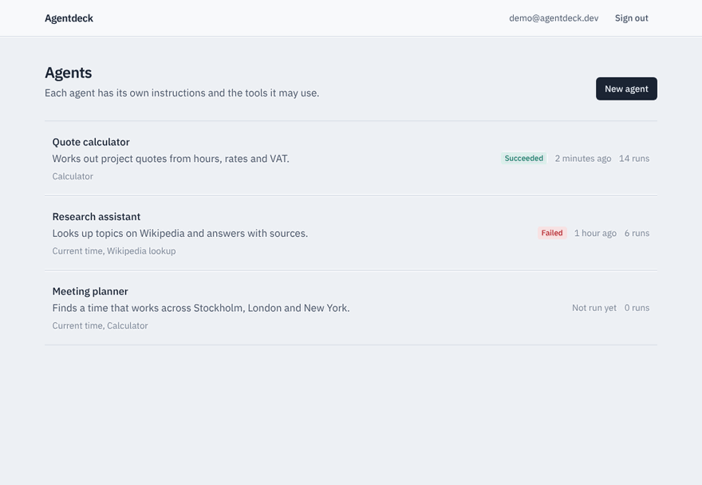

AI agents and tool use
Agents that call your real systems through typed tools, with step limits, retries and a full trace of every decision.
- Anthropic API
- OpenAI API
- MCP
- Tool calling
- Agent loops
- Streaming
Senior software engineer building AI agents
Agents and tool useLLM evaluationBackend and data
Customer message "Can I get a refund for order A-1042?"
about
I've spent 18 years building production software: backend services, cloud data pipelines, web apps, and the test suites that keep them honest. I've shipped systems for healthcare, finance, banking and SaaS.
Now I build AI agents. These are LLM apps that call real tools, make decisions you can audit, and fail safely when the model gets it wrong. My testing background shapes how I build them: I measure them like any other system before I trust them.
Years building and shipping production software
Industries served: healthcare, finance, banking and SaaS
API keys needed to try my projects
what I build
Grouped by the problem it solves, not by logo.
Agents that call your real systems through typed tools, with step limits, retries and a full trace of every decision.
Regression suites for prompts and agents, deterministic demo models for CI, and guardrails that keep a wrong answer from becoming a wrong action.
Services and APIs that stay boring in production.
Streaming pipelines and warehouses that hold up at millions of rows a day.
Front ends people can use, shipped through pipelines that test every push.
how I work
Six stages. The evaluation stage is the one most AI projects skip.
projects
Each project runs in a demo mode without an API key, and has tests in CI.

Build AI agents with tools, run them, and watch every step they take. Model turns and tool calls stream in live, and every run is saved as a replayable trace.
A support helpdesk exposed as an MCP server that Claude Desktop or any MCP client can use, plus an agent that connects to it over MCP and triages tickets on its own.
Reads incoming support tickets, classifies them with an LLM, and decides whether to answer automatically or hand off to a person.
Real estate lead agent. An AI agent that handles incoming leads for real estate brokers in the US market.
Private repocontact
I'm open to new projects and roles, remote or in Stockholm. Tell me about the process you want to automate.